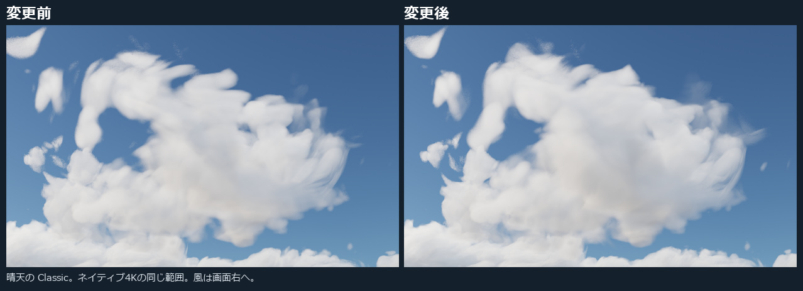
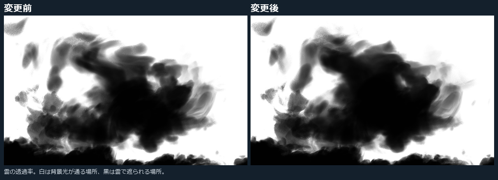
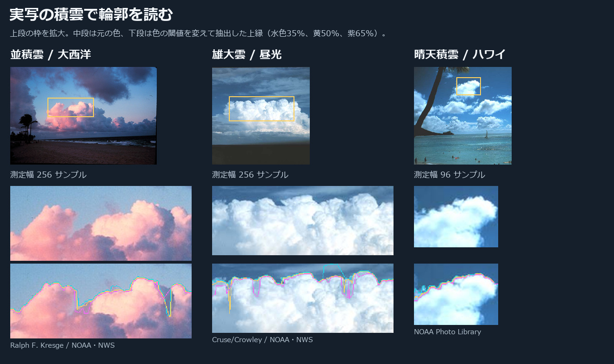
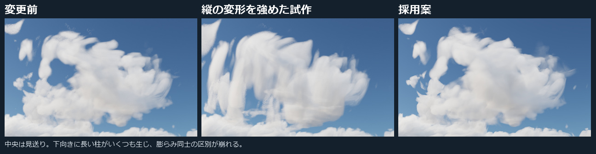
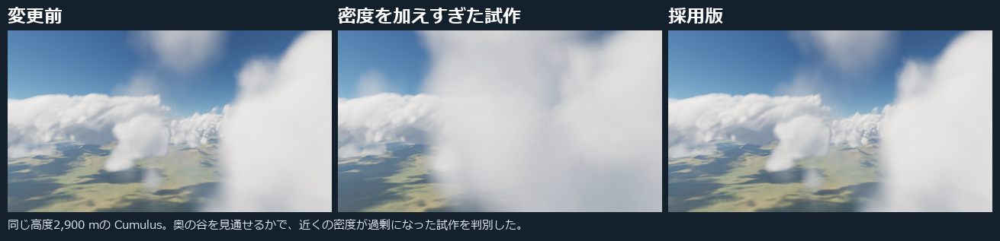
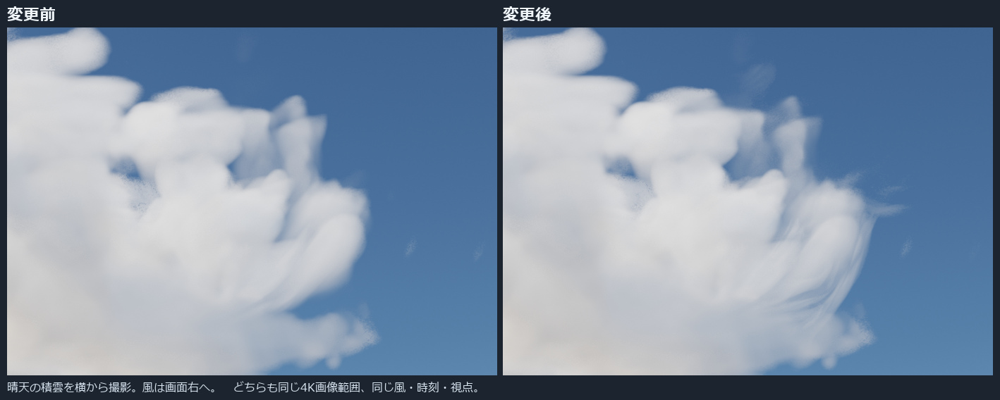
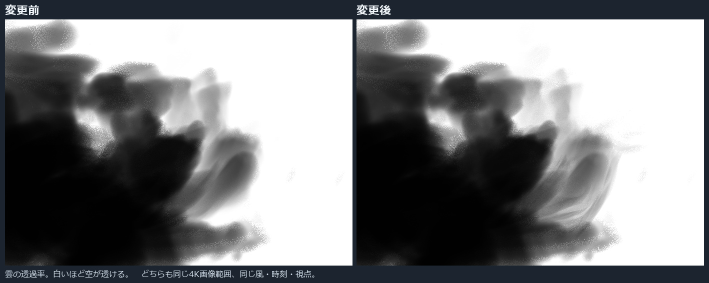
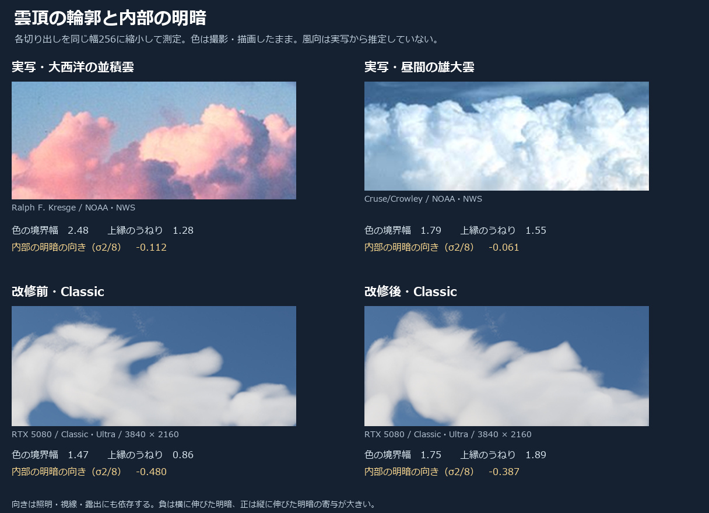

目次 実写から積雲の形を検証する
実写に照らして分かったこと 光が通る隙間と画面全体 別視点と数値積分 解説と再現
実写で積雲の形を読む
晴天で背の低い雲と、発達した積雲 撮影方位や風の記録がある実例 成長する頭と消えていく房 実写とレンダーを重ね合わせる際の読み方
実写で積雲の輪郭を測る
写真から読み取ったこと 色の縁の幅と丸み 再現手順 撮影者と資料
雲の房がつながり、輪郭に凹凸が生まれる仕組み
肩の内側に雲水を残す なぜ一様に縦へ伸ばさなかったか 雲頂の凹凸を風とともに運ぶ 雲に入ったときの見通し どこまで物理として読めるか
積雲の一画素ができるまで
雲を置く場所と、そこにある雲水の量 風下だけに薄い房を作る 近くの雲と遠くの雲を一度ずつ積分する 雲の中の光と、地面に落ちる影 チェッカーと雲専用TAA
実写とレンダリングを照合する撮影・測定手順
1 比較したい現象を写真上で決める 2 山の上から同じ積雲を再撮影する 3 何を見ているかを表示ごとに確認する 4 縁が「ほどけた」ことを測る 5 移動中にも成立するか調べる
半解像度・4相チェッカーでの時間変化
再現条件
実写と改修前後を同じ方法で読む
内部の明暗が向く方向 切り出し位置を変えたとき 小さい雲での別の比較
実写から積雲の形を検証する
図をスライダーで見比べる · 解説をまとめて読む · 雲のC++・HLSLをコードから追う
Classicの積雲の肩に雲水を残し、風で移動する房の表面に小さな3D変位を加えた。太い雲頂の下に見えていた青空が減り、薄い縁から厚い房へ続く形が見やすくなった。前回からある風下の曲がりと組み合わせた。Cumulus は飛行視点での比較を受けて、元の内部密度に小さめの3D変位を適用した。

4K原寸の変更前 · 4K原寸の変更後
実写に照らして分かったこと
大西洋の並積雲と昼間の雄大雲から明るい雲頂を選び、幅256サンプルにそろえて比較した。境界幅は空と雲の局所的な表示色が25%から75%に変わる距離の中央値。うねりは上縁の細かな起伏と広い起伏の差の絶対値の中央値。値はこの倍率でのサンプル数で、メートルや元の4K画像の画素数には換算していない。 実写の選び方 · 切り出し位置と閾値を変えた全測定
対象
境界幅
上縁のうねり
内部の明暗の方向係数
大西洋の並積雲
2.475
1.285
−0.112
昼間の雄大雲
1.792
1.548
−0.061
エンジン・変更前
1.472
0.863
−0.480
エンジン・変更後
1.753
1.893
−0.387
雲頂の境界幅は昼間の雄大雲の例に近づいた。一方、うねりは2例を超え、内部には横長の明暗が強く残る。方向係数は同じ平滑化帯域（σ2/8）で測り、この例では負の値が大きいほど横長の模様への偏りが強い。ハワイの別の晴天積雲は公開画像で小さいので、こちらは幅96で独立に比べた。境界幅は実写2.020に対して改修後0.959。雲種・光・撮影距離が異なり、例数も少ないため、自然界の基準範囲を決める測定には使えない。 NASA掲載の写真と撮影者 · 大西洋の写真の撮影記録
光が通る隙間と画面全体
同じ晴天、同じ太陽と風、同じ4K視点のレンダーの生の透過率 T を調べた。カメラ位置は (451, 1730.26, 5214) m、方位 −24°、仰角14°。太陽高度38°・方位 −102°。Classic／Ultra、雲TAAオン、フル解像度、チェッカーオフ、60 Hz固定の4フレーム目。選んだ地点では近景ボクセルの透過率が全域1で、対象雲は遠景パスに収録されている。
領域
指標
変更前
変更後
中央の穴 x=1510–1769、y=620–859
T>0.90の面積率
47.0%
33.5%
雲頂を囲む領域 x=1320–2499、y=365–1079
平均T
0.579
0.533
画面上部1000行の全幅
T>0.90の面積率
82.8%
81.9%

別視点と数値積分
Cumulus の飛行視点で見つかった過剰な白かぶりは、最終設定で修正した。遠景バッファの平均透過率は変更前0.522、中間案0.303、採用版0.520だった。この飛行視点は調整に再利用しており、独立な最終評価には数えない。 飛行視点の3案比較
低い飛行視点では晴天の Classic を960×540の4フレーム目で比較した。高度2,900 mでは晴れ間の Cumulus を同じ大きさの5フレーム目で比較した。前後ペアごとにカメラ位置、積算風、光、天候、履歴の位相が一致する。 低い視点 · 雲と同じ高度
対流の弱い曇天では、Cumulus の640×360画像で 230,400/230,400 画素のRGBが一致した。全景に同じ変化を掛けていないことを確認する対照例である。
640×360で、視線方向の遠景・近傍の細分予算を4倍、空と仮定する基準歩幅を1/4にした検証用シェーダーを用意した。通常設定と細かい設定の生のTを、同じ4フレーム目の画素ごとに引いた。雲を含む矩形 x=220–419、y=60–177 の平均絶対差は変更前 0.0138、変更後 0.0125。変更後の95パーセンタイルは 0.0667。全画面平均は順に 0.0038、0.0036。これは同じモデルの積分刻みへの感度で、写真との誤差や連続積分の真値ではない。太陽レイの予算は両方同じ。
実機はRTX 5080。通常のRelease配置と比較用シェーダーのSHA-256を照合した。 数値と画像ハッシュ · 測定スクリプト
ハーフバッファ、Classic Fast、4相チェッカー、雲TAAでも20フレームずつ連続撮影した。風が動く静止カメラの風下側で、隣接フレームの平均表示輝度差は0.170から0.159階調、95パーセンタイルは両方とも0.928階調だった。 時間方向の測定
Classic の4K画像は飛行向け調整の直前に収録。最終版と照合すると、Classic の視線・近景照明・雲影・修復の最適化済みバイトコードがそれぞれ一致した。飛行視点の Cumulus は最終設定で再撮影した。 コンパイル結果
解説と再現
再測定には Python、NumPy、Pillow を使う。リポジトリ直下で python docs/sky-study/scripts/measure_render.py captures/sky-study/20261122 measured.json を実行する。PNGは描画器の直接出力で、図版のJPEGはそれを縮小・切り出したもの。比較の基準は前回の風下の縁を実装した作業ツリーで、その4K画像を再使用した。変更前後のシェーダー差分と、高サンプル参照の差分を同梱した。 実装差分 · 積分刻みの参照差分
目次に戻る
実写で積雲の形を読む
晴天積雲の肩を横から見ると、明るい塊のすべてが同じ方向に巻いているわけではない。パリの強風時の実写では、はっきりした丸い頭のすぐそばに、境界がほどけた小さな塊がある。大西洋上の例では、列の中で一つの高い頭が大きく傾き、その隣の頭は低く丸い。レンダリングを見直すときは、ひとつの縁をどこまで長く伸ばせるかに加えて、同じ画角にこの違いが共存するかを見る。 パリの実写 · 大西洋の実写
晴天で背の低い雲と、発達した積雲
米国気象局ルイビル予報室の分類ページにある二枚を対にすると、雲の大きさと、表面の凹凸の大きさを区別しやすい。通常の積雲の写真では、湖上に空の抜けた間隔があり、比較的平らな陰の底に、幅の違う白い膨らみが載っている。雄大積雲の写真では、大きな二つの盛り上がりの間に鞍部があり、それぞれの頭に小さな膨らみと陰が重なる。どちらも地上からの別々の写真で、観測日時、風向や個々の雲までの距離は当該ページに記載されていない。ここでは塊の階層と輪郭を照合できる。 分類と写真の出典 · 通常の積雲の実写 · 雄大積雲の実写
WMO の国際雲図帳では、扁平積雲の典型例として、上面の多くが平たく一部だけ少し丸いものが示されている。中程度に発達した積雲を上から観察した場合には、雲ごとに大きさの異なるドーム状の膨らみが見える。高さが違うだけで、全雲が同じ粒を積み上げた形になる設定は、この両方との照合で見つけやすい。 グランドキャニオンの扁平積雲、印刷頁3 · 航空機から見た並積雲の定義
撮影方位や風の記録がある実例
実写と撮影条件
画像上で確認できること
描画との比較に使える範囲
スウェーデン・Ånn、1950年7月14日10時、東南東向き
畝のように平らな雲底と小さな膨らみを持つ扁平積雲が多数ある。図中の二か所にちぎれ積雲が混じる。
薄い房や孤立片を一部に残し、場全体での出現頻度を目視する例。現地の風速値はこの図説にはない。 WMO、印刷頁5
パリ、1948年4月3日9時01分、南東向き
発達を始めた膨らみと、綿くずのように縁が崩れた部分が同じ空にある。図説は下層の風を西南西、地表の風速を8～12 m/s、突風ありと記録している。
風のある日の左右非対称と房の不揃いさを確認できる。雲頂高度での風ベクトルや鉛直シアの値を求めるには別の観測が要る。 WMO、印刷頁6
フランス・ラ・ロシュポ、1952年9月7日9時15分、北向き
図中の二つの塔が右に傾き、塔の先端にちぎれた部分がある。図説は風の鉛直シアを指摘している。
塊全体の傾斜と、縁の小さな房を別々に見る。ここでの右はこの写真に固有の画面方向。 WMO、印刷頁7
大西洋北緯9度・西経22.6度、1974年9月7日13時15分、東南東向き
同程度の雲底高度に、雄大積雲・並積雲・ちぎれ積雲が並ぶ。とりわけ図中1の塔が大きく傾く。背景には高積雲もある。
同一場での塔ごとの高低差と傾きの比較に向く。高積雲まで低層積雲として輪郭を取ると、外形を誤る。 WMO、印刷頁8
成長する頭と消えていく房
フロリダ州クルーイストンで、1978年8月に東へ向けて17時30分と17時40分に撮った同じ雄大積雲がある。最初は暗く平らな底から頭が立ち上がり、頭の輪郭は明瞭で、途中に薄くぼやけた場所がある。10分後、頭はさらに高くなる一方、間の一部が蒸発して頭と本体が分かれた。頭が育つことと、そのすぐ下で房が消えることは両立する。この例には降水もあり、晴天積雲の寿命を10分と決める根拠には使えない。 WMOの同一雲の二時刻、印刷頁14
NASA Langley の写真解説では、薄く孤立した積雲を一枚だけ見た場合、形成途中と消散途中のどちらもあり得るとしている。プエルトリコの別の例では、同じ低層の積雲が、手前では縁がぼんやりと、遠方ではくっきり見える。時系列があれば一つの房を追い、単一視点の画像しかなければ、写った時点での輪郭の鋭さと濃淡に限定して判断できる。 NASA Langley の撮影者別の積雲写真集
航空機が横切って測ったもの
Wang、Geerts、French は、冬の熱帯大西洋、モンスーン期のソノラ砂漠、夏のワイオミング高原の資料を集めた。積雲を横切った1,624例を重ねると、内側から縁へ向かうにつれて液水量・雲粒の数濃度・平均粒径が下がる傾向がある。ここで測ったのは航空機が通った線上の局所量である。目で見る輪郭には手前と奥の雲水が重なる。観測の液水量を、画像の白さやアルファ値にそのまま割り当てると、短い区間に濃い水滴がある場合と、薄い水滴が長く続く場合を区別できなくなる。 Wang ほか（2009）
Katzwinkel ほかはヘリコプターから吊った観測装置で、貿易風積雲の雲頂から約100 m以内を横切った。雲内の鉛直風速と浮力で事例を分類した表1では、雲の内側にある下降域の厚みの中央値は、成長中で2 m、減速中で16 m、消散中で82 mだった。標本数は順に122、79、14。著者らは、液水量や直径に設けた選択条件で、弱い消散例の多くが除かれる点も述べている。この結果から読み取れるのは混合が発達段階によって大きく変わること。カメラに写る白い筋の幅を82 mと固定する用途には、光学観測が別途必要になる。 Katzwinkel ほか（2014）、表1と図5
下降流、風向、雲水のずれ
McMichael ほかの米国南部大平原・ドイツ西部のドップラーライダー観測では、浅い積雲を囲む下降域の代表的な幅は約100 mだった。雲通過の前後を平均した断面では、先に上空を通過した縁から水平に200 m外側の下降域は雲底の約275 m下まで達し、後から通過した縁の同じ距離では400 m以上に達した。比較計算の格子間隔は10 m。ライダーの縦断面の前後、地表風の風下、上空の風の鉛直シアの向きは、それぞれ基準が違う。可視の房を置くには、下降流の位置に加えて、その空気中に雲粒が残っているかが重要になる。 McMichael ほか（2020）、図1
Zhao と Austin が調べた数値実験では、六つの浅い積雲が複数の上昇する気塊によって成長した。風に鉛直シアがある条件では上昇する頭の片側で巻き込みが強まり、別の膨らみがその風上側から育つ例が示される。風下に露出した房だけを曲げる描画にとって参考になる断面である。シミュレーションで得た三次元流速と、写真から推定した形状には別々の不確かさがある。 Zhao & Austin（2005）、図4
実写とレンダーを重ね合わせる際の読み方
雲の形 は、雲底が見え、他の高さの雲と重なっていない範囲で比べる。頭の高さと幅、房と次の房の間に入る空、密な部分のすぐ横にあるちぎれた部分を見る。写真の上下を回転させたり、縦横を別々に拡大すると、風で倒れた角度が変わる。風の向き は、撮影方位と高度別の風が対応付くときに画面へ投影できる。撮影方位や風の記載のない写真には「左端」「右端」と書く。地表風しか分からない場合はその高度を明記する。縁の幅 を画像で比べるなら、空の明るさ、画角、雲までの距離、露出、解像度を考慮する。写真の明度や青みには、雲による散乱と透過、前景の大気、カメラの色調補正が重なる。レンダーから直接出せる透過率の比較は、同じ視点・時刻・光の条件での修正前後を扱う。実写からの距離推定には撮影条件、実写からの透過率推定には校正された放射測定が必要になる。時間変化 は、同じカメラで雲本体の移動も追うと読みやすい。クルーイストンの比較なら、頭と本体の間の隙間が開く過程に注目できる。別日の二枚を並べた比較では、異なる発達段階の形の例を示せる。
目次に戻る
実写で積雲の輪郭を測る
実写をよく見ると、一つの雲の中にも、明るい房がくっきり立つ箇所と、後ろの青空がにじむ箇所がある。この資料では明るい雲頂と背景の境目をRGB画像から取り出し、カメラに見える縁の幅と、丸い房が連なる凹凸を調べた。夕方の並積雲、昼間の雄大雲、ハワイの晴天積雲を使った。写真ごとの気象条件を分けて読む。

上の枠を中段と下段に拡大した。水色・黄・紫が離れる箇所を見ると、雲のどこを「縁」と数えるかで見かけの形が変わる。中央の写真の水色線は一部で上空の別の層を拾い、左の写真の紫線は影に落ち込んでいる。3本が8サンプルを超えて離れる列は測定から除いた。図中の拡大は表示用で、数値は下表の測定幅で計算した。
写真から読み取ったこと
大西洋の並積雲 では、暖色に照らされた手前の房、奥の青い影、手前の房に部分的に隠れた小さな膨らみが一緒に見える。右寄りの暗部は、色の閾値を動かすと空との境目が急に深くなる。形と陰影の両方が輪郭の抽出に効く例である。昼間の雄大雲 では、雲の塊の上に幅の違う丸い房が並ぶ。輪郭が鋭い箇所のすぐ内側に、別の明るい面と影が続く。積雲の発達段階が異なるため、雄大雲の縦横比は晴天の小さい雲の設計値には使えない。ハワイの晴天積雲 には、明るい大きな塊と、その脇でちぎれるほど淡い小片が同居する。小さい雲なので幅96で独立に測った。風向の記録は得られておらず、画像に写った小片から風の向きは決められない。
色の縁の幅と丸み
「色の縁の幅」は、雲の外から内へ横切ったとき、空側と雲側の局所的な色の差の25%から75%に達するまでの距離である。「うねり」は上縁を二つの大きさでならした線の差の絶対値の中央値で、中規模の房が作る凹凸の一つの指標である。どちらも切り出しを表記幅にそろえた画像上のサンプル単位 。閾値0.50での値を示し、括弧内は閾値0.35・0.50・0.65の間での幅中央値の範囲を示す。
対象
測定幅
有効法線数
色の縁の幅
うねり
大西洋の並積雲
256
210
2.475（2.437–2.475）
1.285
昼間の雄大雲
256
176
1.792（1.792–1.853）
1.548
改修の基準にしたClassicの積雲
256
222
1.472（1.453–1.546）
0.863
ハワイの晴天積雲
96
72
2.020（2.020–2.187）
0.514
同じClassicの積雲を幅96に縮小
96
45
0.900（0.900–0.925）
1.143
幅256の切り出しで、基準のClassicはこの2枚の実写より明るい雲頂の色の境界が短く、うねりも小さかった。一方、幅96の晴天積雲のうねりは、同じ幅のClassicを下回った。撮影された雲の大きさ・距離・雲種は異なり、縮小でも細部は変わる。この数値は掲載した領域についての比較である。全ての雲に一定のぼかしや凹凸を足す根拠には使えない。
改修を加えた後も同じ範囲を再測定し、雲の中の模様がどちらへ長く伸びるかを比較した。 改修前後と実写の比較
再現手順
明るい主雲頂とその上の空が両方入る範囲を固定する。表の元となる [左, 上, 右, 下) は大西洋が 245 202 545 326、雄大雲が 74 128 361 238、ハワイが 187 45 292 122。いずれも同梱の画像上の座標である。4Kレンダーは 1520 384 2240 687。
アスペクト比を保ったまま、Lanczosで幅256または96に縮小する。各画素の (R−B)/(R+B) を求め、切り出し内の第8・第92百分位を0と1に写す。これは空と雲を区別する表示色の指標で、写真の露出・ホワイトバランス・大気の霞に依存する。
各列を上から走査し、閾値以上の画素が3個続く最初の位置を上縁とする。3閾値とも検出され、位置の幅が8サンプル以内の列を残す。うねりには標準偏差1.5と8サンプルのガウス平滑を使い、端から24サンプルを除いて線の差の絶対値の中央値を求める。
なめらかにした上縁に直交して、外側10から内側10サンプルまで0.25間隔で色を補間する。各側7〜10サンプルの色の中央値を各法線の空側と雲側の基準にする。色の差が小さい法線、25%・50%・75%を複数回通過する法線、中央交点が検出上縁から4サンプルを超えてずれる法線などは除く。残った法線ごとに25%と75%の距離を求め、その中央値を表に載せた。
Python・NumPy・Pillowを使う。スクリプトは入力画像に書き込まない。同梱の参照画像と測定結果にはSHA-256、元の画素寸法、閾値ごとの採用数がある。画像や画質の版が変われば同じROIを再確認する。 計測コード · 全写真の数値
python measure_crown.py references/atlantic.jpg --roi 245 202 545 326 --width 256 --json atlantic-results.json --overlay atlantic-outline.png
python measure_crown.py path/to/3840x2160.png --roi 1520 384 2240 687 --width 256 --json render-results.json --overlay render-outline.png
各写真の風速鉛直分布、同時刻の雲水量、太陽・カメラの較正値、被写体までの距離は未取得。1枚のJPEGからメートル単位の混合幅や雲の光学的透過率を求めることはできない。モデル内の物理的な透過率の変更は、同条件で撮影したレンダーの透過率バッファで別に検証する。近接する法線は同じ雲を横切るため、有効本数を独立した雲の標本数とはみなせない。
撮影者と資料
atlantic.jpg 。Ralph F. Kresge #1126-c、NOAA Photo Library / Historic National Weather Service Collection、画像ID wea00081。1980年9月、米国フロリダ州ディアフィールドビーチ付近。Commonsで公開されている960×639の版を使用した。作品ページに米国でのパブリックドメイン表示がある。 作品情報 congestus.jpg 。Cruse/Crowley、NOAA Photo Library / National Weather Service Collection。NASA Space Place Piled up clouds の430×430配信版。 NASAの画像とクレジット · 配信画像 hawaii.jpg 。NOAA Photo Library。NASA Space Place A perfect day の430×430配信版。NASAは撮影地をハワイと記載している。 NASAの画像とクレジット · 配信画像
切り出し、色の境界線、測定結果、比較図はこのエンジンの検証用の加工である。写真のクレジットと利用条件は各原典に従う。 NOAAの画像利用案内 · NWSの利用案内
目次に戻る
雲の房がつながり、輪郭に凹凸が生まれる仕組み
今回の変更は普通の積雲の密度を作る HLSL の二か所にある。風下へ張り出す頭と希薄な先端は前段階の実装を利用する。共通シェーダー
肩の内側に雲水を残す
一つの柱にある底から頂までを0～1とする高さを localHeight として、上昇域の「肩」を選ぶ。実装では天候から求めた対流の強さ、その地点の被覆率、地図上の柱の厚みを掛ける。肩の強さは、底から3～20%の間で滑らかに立ち上がり、52～88%でゼロに戻る。これはレンダリング用の調整値で、航空機が測った混合率の推定値とは区別する。
元の大きな形の値を e、上記の条件を掛けた重みを w とすると、補強後は e + (1 − e) × w × smoothstep(0.15, 0.53, e)。重みの上限は0.52。すでに雲水が少しある場所が隣の房へ続き、空の柱では何も生じない。Classic は被覆率と閾値からこの補強を評価する。Cumulus はもともと雲の内部を補強する式を持つため、飛行視点での再検証を受けて追加の密度補強は Classic に限った。大きなPerlin–Worleyと細部を刻むWorleyはどちらも既存の資産を読む。
Classic は細かなノイズを読む前に、雲が存在し得る最大値を計算する。この補強は元の値に対して単調増加する。したがって最大値にも同じ補強を適用してから判定すれば、新しい房を空として飛び越すことを防げる。雲影や太陽側からの遮蔽にも同じ密度関数が使われる。
なぜ一様に縦へ伸ばさなかったか
比較の中央では、肩の下で密度を読む座標を大きく上へ動かした。固定視点の青空の穴は狭くなったが、普通の積雲の腹に、下へ引いた絵の具のような縦の列が生じた。上縁の数値だけを合わせても、この破綻は検出しにくい。採用案では3D座標を上へ大きく集める操作を外し、元の柱に残る雲水を調整した。

雲頂の凹凸を風とともに運ぶ
同じ高度で均一なノイズを画像に足すと、雲が移動しても模様だけが画面に残りやすい。そこで、風で移流した座標を使って、CPUで生成済みの周期的な3Dベクトル場を1回読み、密度を参照する位置を三方向へ少し動かした。標準の水平サイズでは格子間隔は約258 m、各軸の最大変位は Classic が50 m、Cumulus が32.5 m。これらは雲粒の大きさではなく、房の表面に与える変形の空間スケールである。振幅は高度と対流の強さに応じて変わる。雲層の底と上限で滑らかに消す。 ベクトル場の生成
同じ変位を近景の視錐台格子、遠景のレイ、光の参照位置が共有する。画面上で動く細部は既存の雲TAAで再投影する。描画コストには変位場の3Dテクスチャ参照が加わる。レイの予算、TAAの履歴の強さ、散乱係数はこの変更の調整対象に含めていない。
雲に入ったときの見通し
Cumulus でも Classic と同じだけ房の中を濃くした試作では、カメラ前方の白い雲が広がり、手前を雲が流れる様子や地形が見えにくくなった。晴れ間・高度2,900 mで保存した遠景雲バッファの平均透過率は、変更前0.522、試作0.303、採用版0.520。採用版では Cumulus の既存の内部密度を採用し、中程度の3D変位で肩を崩す。同じ場面を調整に使ったので、この視点は修正後の回帰確認として扱う。

どこまで物理として読めるか
実写や浅い積雲の研究では、ひとつの雲の中で成長する房と薄れていく縁が同時に見える。ここではその空間的な違いを近似した。気塊の寿命や凝結・蒸発を時間積分したり、写真から風速を逆推定したりする機能は持たない。複数の房が重なる投影では、正面の青空の穴だけから、3Dの雲が物理的に分離しているかを一意に決めることもできない。 WMO の撮影記録と時系列 · Wang & Zocchi の積雲形状モデル · Bouthors & Neyret の階層的な雲形状
目次に戻る
積雲の一画素ができるまで
画面右へほどける房を例に、配置、立体の形、照明、時間方向の復元を順に追う。通常の積雲は Classic と Cumulus の両方にある。F4 で切り替わるのは雲の描画スタイルで、天気の「晴れ」「晴れ間」とは独立している。
雲を置く場所と、そこにある雲水の量
CloudMapCS は地域の天候から、地面に平行な地図を作る。R と G は各列の下部と上部の被覆率、B と A は雲層の厚みを 1 とした局所的な雲底と雲頂。湿った上昇域では地図上の雲頂が高くなるので、同じ高度から横に見ても、積雲の肩と頭を区別できる。この地図は約 65.5 km ごとに繰り返す。薄雲・筋雲・うろこ雲には別の雲種マップと被覆率マップがある。普通の積雲だけを比べるときは --no-texture-cloud-layers --formations none を指定する。 配置マップの生成 · 高層の薄い雲の定義
cloudBodyShape は、地図で決まる高さの範囲と被覆率を使い、その点に雲があるかを3次元で評価する。Perlin–Worley が大きな塊を作り、Worley の異なる周波数帯が房の大小や縁の切れ込みを作る。細部を読む前の密度は、細部を削った後の密度の上限になる。視線を大きな歩幅で進めるときも、この上限を見て、次に細かく調べる区間を選べる。 密度を作る関数
風下だけに薄い房を作る
風が画面右へ吹く例では、まず現在位置とその風上の柱を比べる。風上側の雲頂が高く、風下側へ被覆率が落ちる肩が候補になる。shapeDownwindCrown が肩の上を先に進め、その下を少し引いてくびれを作る。露出度が高く密度が低い部分では、上流の雲体を曲線に沿って参照し、残る雲水を混ぜる。進行に対して水平変位が一次、下降と横へのずれが二次なので、伸びた房は先ほど下側に巻く。乾いた天候ほど運ばれた密度は早く小さくなる。各房の曲率と希釈率は、既存の雲水分布から毎フレーム求める描画用の近似である。 風下の雲の数式と実装

この既存比較で風向は画面右。左図の丸い輪郭の外側だった場所に、右図では青空を透かす細い房ができている。撮影条件と近い画素の透過率も記録されている。 この図の撮影条件と測定範囲
近くの雲と遠くの雲を一度ずつ積分する
視線上の区間
評価される量
距離の使い方
カメラ付近
LightNearCloudCS が各セルの消散と散乱光を評価し、IntegrateNearCloudCS が視点側から各列を累積する格子は 80×44×32。奥面はカメラの前方向に 160 m。深度境界はスライス番号の二乗で配分されるので、手前のセルほど薄い。斜めに見る画素では、視線が格子内を進む距離は長くなる。
格子奥面から雲層・特殊雲まで
traceCloudRay がカメラから雲層までの交差区間を求め、散乱光・透過率・代表距離を蓄積する地形や川面より奥へ進まない。雲の近くでは、格子直後から近距離範囲の終端まで約 40 m 以下の細かな区間で追う。遠景では粗い密度に当たると区間の先頭へ戻り、条件を満たす間は最大3段まで歩幅を半分にする。
最終画素
CompositePS が近景の積分結果を取り出し、大気、遠景雲、地表または空を合成する格子を使った分だけ遠景の開始点を奥へ動かす。視点の高度と周囲の雲で格子の有効・無効が切り替わる。
雲だけを考えると、一つの区間で背景光が残る割合は segmentT = exp(-extinction × distance)。そこへ届いた光の割合を T とすると、区間の色は T × (1 − segmentT) を重みに加算し、その後で T ← T × segmentT とする。同じ式で近景と遠景を合成できる。典型的には白い縁の向こうに青空が残り、密な雲を長く通るほど背景が隠れる。 視線・近景の積分 · 近景を有効にする条件 · 最終合成
雲の中の光と、地面に落ちる影
視線上の点が雲の中なら、lightOpticalDepth がその点から太陽までの遮蔽を求める。最初の区間長は 35 m、以降は 1.65 倍ずつ伸ばす。Classic は光の軸の周りへサンプル点を少しずらし、上空3点の遮蔽から天空光も求める。Cumulus は短い太陽レイの後を雲影マップで補う。散乱光の見積もりには、散乱角に応じた位相関数と、直達光より弱く減衰する多重散乱の近似が入る。雲の輪郭が同じでも、太陽方位を変えると房同士の陰影は変わる。 光学的厚さ・位相関数・照明
品質
遠景の視線ステップの基本予算
太陽レイの基本予算
雲影マップの一辺
自動設定での雲バッファの縦横
Low
160
6
256
画面の 1/4
Medium
224
8
512
画面の 1/2
High
384
12
768
画面の 1/2
Ultra
640
16
1536
画面と等倍
太陽レイは必要な距離を進んだ時点や、遮蔽が十分に深くなった時点で終了する。Low の標準照明では末尾2区間をまとめるので上限は5回。視線側は近距離区間や細分化の影響を受け、表の数字と実際の密度評価回数は異なる。地面や他の雲から引く雲影マップは 48 km 四方の RG16F で、R に透過率、G に遮蔽深度の情報を持つ。例えば Ultra の影のテクセル幅は 48,000 ÷ 1,536 = 31.25 m。 品質別の初期値と雲影の範囲
チェッカーと雲専用TAA
チェッカーが有効な通常フレームでは、一定の位相の画素だけをレイマーチする。Classic Fast は4相、通常の Classic および Cumulus は2相。履歴が無効になった最初のフレームは全画素を更新する。
TemporalCS が未更新画素の候補を前フレームから再投影する。適切な履歴を得られなかった画素は RepairCS が同じ積分で埋める。CloudAntialiasCS が雲の色と透過率の縁を処理する。雲の視線に8位置のサブピクセル列を適用し、チェッカー1巡ごとに次の位置へ移る。再投影では代表距離と風の移動量を使い、前回と違う奥行きや地形に隠れていたサンプルを棄却する。色と透過率は現フレームの3×3近傍の範囲でも制限する。
このTAAは雲バッファの解像度で動く。例えば High・自動設定なら縦横半分の雲を安定化してから画面へ展開する。形を調べる撮影ではフル解像度を選ぶと、雲そのものの密度と再構成の寄与を追いやすい。 雲専用TAA · チェックと再描画 · 比較の手順とデバッグ表示
目次に戻る
実写とレンダリングを照合する撮影・測定手順
ここでは「白い積雲の縁が風下でほどける」という見え方を、①実写にある形、②レンダラーが出した透過率、③表示画像の時間変化から調べる。次のコマンドで同じ視点を再撮影できる。すでに保存してある初期の比較結果は本文の図から確認できる。
1 比較したい現象を写真上で決める
写真から読むもの
記録する方法
解釈する際の条件
主な房と小さな房の大きさ
雲の端が空と交わる位置をたどり、丸い山と隣り合う谷に印を付ける。各山の幅を、その雲全体の投影幅に対する割合で残す。
撮影距離や画角が違う写真では、画像上のピクセル数をそのまま比較できない。全体が画面外に切れる雲は別扱いにする。
片側でほどける方向
房の付け根、折れ曲がる点、目視できる先端の3点を記録する。風が分かる場合は、その方向へ投影した変位と直交方向の変位を比較する。
雲の高度の風は、移動を追える連続写真や同時刻の高度別観測から判断する。一枚の写真だけなら「画面右側」などの記述に留める。
人工的に見えやすい反復
隣り合う房について、同じ径・同じ傾き・等しい間隔が何回続くかを記録する。斜光と逆光の例は分ける。
画像圧縮、白飛び、前後に重なった別の雲は輪郭の判定を変える。判断できない区間は長さの集計から外す。
晴天積雲、発達中の積雲、崩れてちぎれた雲では、同じ高さで見ても肩の丸みと縁の見え方が変わる。写真の作者、元のページ、取得条件、撮影方向、雲種を残す。著者による雲種の記録と、こちらで図から読んだ特徴は別々に書く。実写と3D画像の色を比較するには、太陽方位、露出、ホワイトバランス、トーンカーブも関係する。通常のカラー写真から、雲の透過率を直接測るには追加の放射測定が必要になる。 既存の実写・観測研究の資料
2 山の上から同じ積雲を再撮影する
リポジトリのルートで PowerShell を開き、Release 版をビルドしてから実行する。画面右へ吹く風を横から見る視点で、太陽高度38°、方位−102°を固定した。比較に使う先頭4フレームだけを進めて、通常のカラー画像と生の透過率を保存する。
$repo = (Get-Location).Path
$engine = Join-Path $repo 'out/vs/Release/CirrusEngine.exe'
$captureDir = 'captures/sky-study'
[void][IO.Directory]::CreateDirectory((Join-Path $repo $captureDir))
$scene = @(
'--headless', '--no-ui', '--no-vegetation',
'--width', '3840', '--height', '2160', '--frames', '4',
'--fixed-dt', '0.0166666666666667',
'--camera', 'fly', '--spawn', '451', '5214', '--look', '-24', '14',
'--weather', 'clear', '--sun-elevation', '38', '--sun-azimuth', '-102',
'--quality', 'ultra', '--cloud-style', 'classic', '--cloud-buffer', 'full',
'--no-checkerboard', '--no-texture-cloud-layers', '--formations', 'none'
)
foreach ($view in 0, 20) {
$capture = "$captureDir/ridge-view-$view.png"
$options = $scene + @('--debug-view', "$view", '--capture', $capture)
$run = Start-Process -FilePath $engine -ArgumentList $options -WorkingDirectory $repo `
-WindowStyle Hidden -Wait -PassThru
if ($run.ExitCode -ne 0) { throw "Capture failed with exit code $($run.ExitCode)" }
}
各 PNG と同名の JSON で adapter、camera_position_m、wind_offset_m、frames、simulation_seconds、cloud_anti_aliasing、cloud_reconstruction、texture_view.index を照合する。基準撮影では視点は約 (451, 1730.26, 5214) m。地形・視線・太陽を含む起動引数と、使用したシェーダーのバージョンも保存する。CMake でビルドした場合は上の実行ファイルを build/Release/CirrusEngine.exe に置き換えられる。 引数と撮影の実装 · Visual Studio ソリューション
変更前後の比較では、同じ実行ファイルにそれぞれのシェーダー一式を --shader-dir で渡せる。対象に C++ や入力テクスチャの変更もある場合は、それぞれのビルドと入力を記録して比較する。太陽方位だけを変えると陰影の寄与を調べられる。太陽高度を変える場合は配置マップが雲量にもバイアスを掛けるので、透過率画像も一組撮る。 配置マップ
3 何を見ているかを表示ごとに確認する
--debug-view画面が示す値
見分けられる症状
0
大気・雲・地表を合成した最終カラー
観察者から見た雲の印象。表示変換と画面のエッジ処理を含む。
20
現フレームの遠景レイマーチの透過率。白が1、黒が0
雲自体の輪郭や、疎な線が輸送された場所。全解像度・チェッカーオフで座標をカラーと対応させる。
1
時間処理後の雲バッファの透過率
20 と同じ位置で比較すると、輪郭の平滑化や残像を見つけられる。
19 / 13
現フレーム / 時間処理後の雲の散乱光
房の光と影の境界で散乱光がどの程度ならされるかを見る。表示用に変換された RGB。
14
不透明度で重み付けした雲の代表距離の対数表示
奥の雲と手前の雲が重なる場所で、時間処理の参照距離が飛ぶかを調べる。
23
各画素を得た経路。緑は今回のレイ、青は履歴、赤は修復、灰は空と判定
輪郭に沿って修復が集中するか、その色がカメラ移動に追従するかを見る。
26 / 7 / 8
配置マップ / 基本ノイズのR / 細部のWorleyのRGB
群れの分布、個々の雲の大形状、縁の細部の各段階を確認する。
2 / 28
太陽から見た雲層の透過率 / 遮蔽深度の表示
地形の雲影に筋や不連続が出た場合に、太陽側にも同じ形が現れるかを見る。
格子の内部を飛ぶとき、表示20は近景ボクセルの合成結果を含まない。表示0と JSON の near_cloud_voxels を合わせて見る。active は格子が有効か、transmittance.min は格子に光を遮る雲が入ったかを示す。格子が有効でも、そのフレームの全セルがほぼ透明なことはある。 表示番号と内容 · 最終画素での近景合成
4 縁が「ほどけた」ことを測る

既存の山上視点での測り方。 生の透過率 PNG は白黒8ビットなので T = 灰色の値 / 255 として読む。右側の房を横切る各行について、x=1820～2569 の範囲で、しきい値以下の画素が横に7画素以上連続する一番右の位置を求める。50%と90%の2本の輪郭の間隔を行ごとに取り、あらかじめ決めた高さ帯で中央値を出す。頭の高さ y=735～823 では、前回の風下変形の前後でこの幅が16 pxから38 pxへ変わった。この数値は画像幅、視点、濃度しきい値とセットで読む。 前回の測定条件
新しい空へ広げるとき。 雲の風上側にも同じ方法を適用し、風下と同じだけ薄くなっていないかを調べる。密な芯の輪郭、肩のすぐ下、雲底の3帯を分け、各帯の有効行数も添える。別の雲が後ろで重なる行や、丸い山が二股になる行は、どこまでを同じ房とするか先に決める。斜めに伸びる房は境界の外向き法線に沿った断面も比べると、斜めの線を横に走査したことで生じる見かけの広がりを抑えられる。複数視点ではピクセル幅に加え、房の投影幅に対する比率も残す。
照明を点検するとき。 生の透過率、最終カラー、雲の散乱光を同じ位置で見る。透過率に山と谷が出ていてもカラーで潰れる場合は、太陽方位を変えて天空光と直達光のバランスを調べる。カラーだけで雲頂が消える場合は、露出と背景の空の明るさも記録する。 同じ雲を異なる太陽方位から照らした例
5 移動中にも成立するか調べる
撮影条件
確認する現象
観測値の扱い
静止した視点、一定の風
薄い縁の画素だけが明滅していないか。8位相以上の履歴がたまる前と後を見る
明るさの絶対フレーム差を縁の範囲で集計し、雲が自然に移動する分を含む指標と明記する。
横パン、急なカメラ切り替え
古い白い房を青空へ引きずっていないか。移動直後だけ、画素の経路と代表距離も見る
--camera-path pan または --camera-path cut を使う。パンを含む連番で単純な画素差を取ると、正しい移動も大きな誤差になる。
雲層と同じ高度からの飛行
視錐台端での切れ目、地形の前に出る色むら、近景だけ固定されるような動き
上の固定視点引数から --camera fly --spawn 451 5214 --look -24 14 を除き、--camera inside に置き換える。近景の統計とカラーを同時に記録する。
連番には --capture を外して --record captures/sky-study/pan --frames 32 を使う。既存の --frames 4 は置き換える。カットはシミュレーション時刻2秒ごとに起きる。切替を含む軽い撮影には640×360、--fixed-dt 0.05 --frames 50 --camera-path cut を使い、2秒前後の連番を比較する。時間処理の比較では --no-cloud-taa が雲専用の履歴合成とサブピクセル列の両方に効くので、画質設定表にも明記する。チェッカーボードの再構成は別の処理である。4Kの各4フレームは静止形状比較用で、FPSや連続移動時のちらつきまで評価するには別の測定が要る。 雲のTAA · 既存の移動／切替比較動画
目次に戻る
半解像度・4相チェッカーでの時間変化
RTX 5080 で、同じ晴天の積雲を、カメラを固定して修正前と修正後に各20フレーム描画した。640×360 の最終合成画像、Classic Fast／Medium、320×180 の雲バッファ、4相チェッカー、雲TAAを使用した。太陽高度38°、方位−102°、カメラ位置 (451, 1730.26, 5214) m、視線方位−24°、仰角14°、固定刻み1/60秒。風は (9, 4) m/s で移流する。20行の天候・風の時系列は両条件で一致した。
初めの8フレームを外し、番号8～19の12枚から11組の隣接差を調べた。範囲は撮影前に固定した風下の肩と周囲の空で、x=315～441、y=80～168。各組11,303画素、合計124,333点。各画素の8ビット表示RGBを 0.2126 R + 0.7152 G + 0.0722 B に換算し、次のフレームまでの絶対差を計算した。表の95パーセンタイルは全11組の画素をまとめて求めた。
表示輝度の絶対差（255階調スケール）
修正前
修正後
平均
0.170
0.159
95パーセンタイル
0.928
0.928
この条件の平均は修正後に-0.011階調、95パーセンタイルは+0.000階調変化した。房の移流、画素内サンプル位置、4相の更新、TAAの履歴を含む最終画像の時間差である。純粋なちらつきの大きさを求めるには、同じ運動を解像した時間参照列など、別の対照条件が必要になる。対象は1視点、計0.33秒で、旋回時の残像や長時間のちらつきはこの測定の対象外。
再現条件
修正前・修正後の各シェーダーディレクトリと別々の連番出力先を指定して、以下を一度ずつ実行する。
CirrusEngine.exe --headless --no-ui --no-vegetation --width 640 --height 360 --frames 20 --fixed-dt 0.0166666666666667 --formations none --cloud-style classic --classic-fast --quality medium --cloud-buffer half --no-texture-cloud-layers --debug-view 0 --camera fly --spawn 451 5214 --look -24 14 --weather clear --sun-elevation 38 --sun-azimuth -102 --shader-dir <シェーダーディレクトリ> --record <連番の出力先>
使用した共通シェーダーのSHA-256は修正前が D255FAE7622C5C29FE4CBE512633E077D39B547E08CF054F973B632469F8710F、修正後が 6395A937CE67408A105A9C39EF44E52E2E4A898A6A176FC564CFB83B45BBFB07。最終フレームの記録では、両条件とも4相とTAA履歴が有効で、20フレーム中のチェッカー更新は修正前19回、修正後19回。非有限値は両方0件。
この連番はCumulusの飛行向け補正の直前に収録した。最終版とのソース差分はCumulus専用の密度と、スタイルごとにコンパイル時に選ばれる変位量。Classic の変位の係数は100 mで、ベクトル場を中心化した後の各軸の最大変位は50 m。通常Classicについては視線、近景照明、雲影、修復の4エントリで最適化後の命令列の一致も確認した。 コンパイル結果 · 全フレーム対の集計
フレーム列を再集計するスクリプト · 変更前の20フレーム · 採用案の20フレーム
リポジトリ直下で次を実行すると、同梱のPNGから集計結果をJSONとして取得できる。Python、NumPy、Pillowを使う。
python docs/sky-study/data/temporal/analyze.py
目次に戻る
実写と改修前後を同じ方法で読む
写真2枚とClassicの改修前後を、各画像の中で明るい雲頂と空が接する領域に限って比較した。各領域は同じ横幅256サンプルで観察し、レンダーの2枚は同じ視点・同じ範囲から切り出した。写真は異なる気象条件で別の雲を撮影した資料である。

対象
法線数
色の境界幅
上縁のうねり
方向係数 σ1/4
σ2/8
σ4/16
実写・大西洋の並積雲
210
2.475
1.285
-0.094
-0.112
-0.161
実写・昼間の雄大雲
176
1.792
1.548
-0.036
-0.061
+0.097
改修前・Classic
222
1.472
0.863
-0.400
-0.480
-0.439
改修後・Classic
206
1.753
1.893
-0.392
-0.387
-0.290
境界幅は1.472から1.753サンプルに広がり、昼間の雄大雲で測った1.792に近づいた。夕方の並積雲の2.475よりは狭い。内部の方向係数も3帯域すべてでゼロ側に動いたが、σ2/8では実写の−0.112と−0.061に対して改修後が−0.387であり、横方向の模様の偏りが残る。上縁のうねりは0.863から1.893に増え、この切り出しでは実写2例を超えた。雲頂をより盛り上げる場合は、親の丸い面に対する突出の幅や、この撮影角度で尖った先が続いて見えるかも確認したい。
内部の明暗が向く方向
色の境界幅とうねりは比較資料と同じ方法で求めた。方向係数は、房の中の明暗が縦・横のどちらへ長く続くかを読むための補助量である。雲と空を分けた閾値0.5のマスクの縁を4サンプル縮めて、中の画素を使った。画像端から6サンプルを除外した。色の境界と輪郭の手順
表示RGBの輝度を 0.2126 R + 0.7152 G + 0.0722 B で計算する。ガウスぼかしの差から、対象とする大きさの明暗を取り出す。たとえばσ2/8では、標準偏差2でならした画像から標準偏差8でならした画像を引く。
その画像の左右方向と上下方向の輝度勾配を計算する。マスク内で両勾配を二乗して足し、大きい方の半数の画素を残す。その中で左右勾配の二乗和を Ex、上下勾配の二乗和を Ey とする。
方向係数を (Ex−Ey)/(Ex+Ey) とする。水平な帯の境目は上下方向に大きな勾配を持つので、横に続く帯で値が負に、縦に続く帯で値が正に寄る。+45°と–45°の筋はこの係数だけでは区別できない。
写真の太陽方位、カメラの露出、トーンカーブ、フィルムとJPEGの特性がそろっていない。輪郭に出た差は見かけの形、内部の指標には密度と照明が一緒に寄与する。これらは較正された消散や3D密度の誤差を表さない。比較の意味は、個々の変更で長く連なった横の明暗が残ったか、雲の内側の凹凸まで削っていないかを点検できることにある。
python measure_orientation.py references/congestus.jpg --roi 74 128 361 238 --width 256
python measure_orientation.py path/to/3840x2160.png --roi 1520 384 2240 687 --width 256
方向係数の実装 · 各閾値の全測定結果と元画像のSHA-256 · 撮影者・利用条件と元写真
切り出し位置を変えたとき
同じ雲を中央の範囲で測った値に、左右どちらかを幅の5%詰める2条件、枠全体を高さの3%上または下に動かす2条件を加えた。各回で色の基準を取り直し、抽出閾値0.50で測った5条件の最小〜最大を示す。範囲が重なれば、この切り出しの選び方では優劣を区別しにくい。独立な写真から計算した信頼区間とは性質が異なる。
対象
抽出成功
色の境界幅
上縁のうねり
方向係数 σ2/8
実写・大西洋の並積雲
5/5
2.462～2.569
1.114～1.435
-0.117～-0.026
実写・昼間の雄大雲
5/5
1.713～1.792
1.438～1.810
-0.061～-0.046
改修前・Classic
5/5
1.472～1.492
0.817～0.952
-0.502～-0.441
改修後・Classic
5/5
1.750～1.869
1.775～2.045
-0.423～-0.360
小さい雲での別の比較
ハワイの雲頂は公開写真上の幅が105画素である。拡大補間による細部を測らないよう、レンダーも同じ幅96サンプルに縮小した。幅256の表とは別の観察であり、上下の撮影角度と被写体の発達段階も異なる。
対象
法線数
色の境界幅
上縁のうねり
晴天積雲・ハワイ
72
2.020
0.514
改修前・Classic
45
0.900
1.143
改修後・Classic
62
0.959
1.072
ハワイの晴天積雲を使った幅96の比較では、改修後の境界幅0.959は実写の2.020より狭く、うねり1.072は実写の0.514より大きい。夕方・昼間の二枚に寄った変化を、異なる距離の晴天積雲すべてに一般化することはできない。
目次に戻る